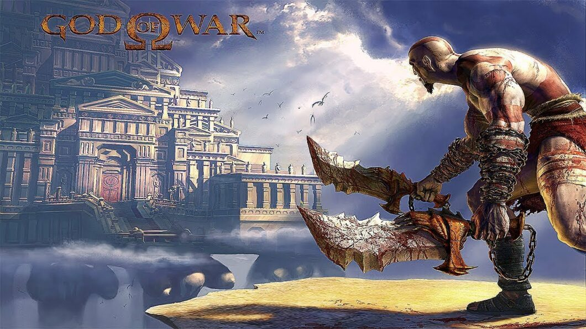

God of War: Uma Jornada Entre Deuses e Demônios
A franquia God of War, desenvolvida principalmente pela Santa Monica Studio e publicada pela Sony Interactive Entertainment, é uma das mais icônicas do mundo dos videogames. Misturando ação brutal, mitologia rica e uma história emocionalmente carregada, a saga acompanha Kratos, um guerreiro espartano marcado por tragédias e por sua busca por vingança e redenção.
Aqui está um resumo cronológico dos jogos principais da franquia:
God of War (2005) – PlayStation 2
O início de tudo. Kratos, um guerreiro espartano atormentado por seu passado, é recrutado pelos deuses do Olimpo para derrotar Ares, o Deus da Guerra, que está causando destruição na Grécia. Neste jogo, somos apresentados ao estilo de combate brutal e aos quebra-cabeças característicos da série.
üåÄ Destaque: A introdu√ß√£o das L√¢minas do Caos e a origem da vingan√ßa de Kratos.
God of War II (2007) – PlayStation 2

Traído por Zeus após conquistar o trono de Deus da Guerra, Kratos parte em busca das Irmãs do Destino para mudar o seu destino. Aqui, o enredo se aprofunda no panteão grego, e o escopo da história se torna ainda mais épico.
üåÄ Destaque: Combate mais refinado e uma narrativa que prepara o terreno para a grande guerra contra o Olimpo.
God of War III (2010) – PlayStation 3

O clímax da trilogia original. Kratos lidera um ataque contra o Monte Olimpo ao lado dos Titãs. O jogo é visualmente impressionante, com batalhas colossais e confrontos épicos contra deuses como Poseidon, Hades e Zeus.
üåÄ Destaque: Conclus√£o sangrenta da vingan√ßa de Kratos contra os deuses do Olimpo.
Jogos Paralelos (Prequelas e Spin-offs)
- God of War: Chains of Olympus (2008) – PSP: Mostra Kratos servindo aos deuses antes dos eventos do primeiro jogo. Ele enfrenta ameaças como Perséfone e Atlas.
- God of War: Ghost of Sparta (2010) – PSP: Explora a busca de Kratos por seu irmão perdido, Deimos, revelando mais sobre seu passado e sua família.
- God of War: Ascension (2013) – PS3: Prequela que mostra os primeiros dias de Kratos como servo de Ares, focando na sua luta para se libertar da influência do deus.
üåÄ Destaque: Esses jogos expandem o universo da franquia e aprofundam a personalidade de Kratos.
God of War (2018) – PlayStation 4
Um renascimento. Kratos agora vive nos reinos da mitologia nórdica, tentando deixar o passado para trás e criar seu filho, Atreus. O jogo muda o estilo de câmera, combate e narrativa, oferecendo uma experiência mais madura e emocional. O foco está na relação pai e filho e em um novo começo.
üåÄ Destaque: O Machado Leviat√£, o sistema semi-aberto de explora√ß√£o e a revela√ß√£o da verdadeira identidade de Atreus: Loki.
God of War Ragnarök (2022) – PS4/PS5
A continuação direta do jogo de 2018. Kratos e Atreus enfrentam as consequências do início do Ragnarök, o fim dos tempos na mitologia nórdica. A jornada os coloca frente a frente com figuras como Thor, Freya, Odin e outros deuses poderosos.
üåÄ Destaque: Conclus√£o √©pica da saga n√≥rdica, com um equil√≠brio entre a√ß√£o, emo√ß√£o e mitologia.
O Legado de Kratos
De um guerreiro sedento por vingança a um pai tentando quebrar o ciclo da violência, Kratos se tornou um dos personagens mais complexos e admirados dos videogames. A franquia God of War evoluiu com ele, apresentando jogos cada vez mais refinados, emocionantes e impactantes.
Com gráficos impressionantes, trilha sonora marcante, narrativa envolvente e combates inesquecíveis, God of War é uma obra-prima dos games — um épico moderno que continua a emocionar gerações.
Em cada batalha, em cada perda e em cada escolha, Kratos nos mostra que até os deuses enfrentam suas próprias guerras. Que venha o próximo capítulo.